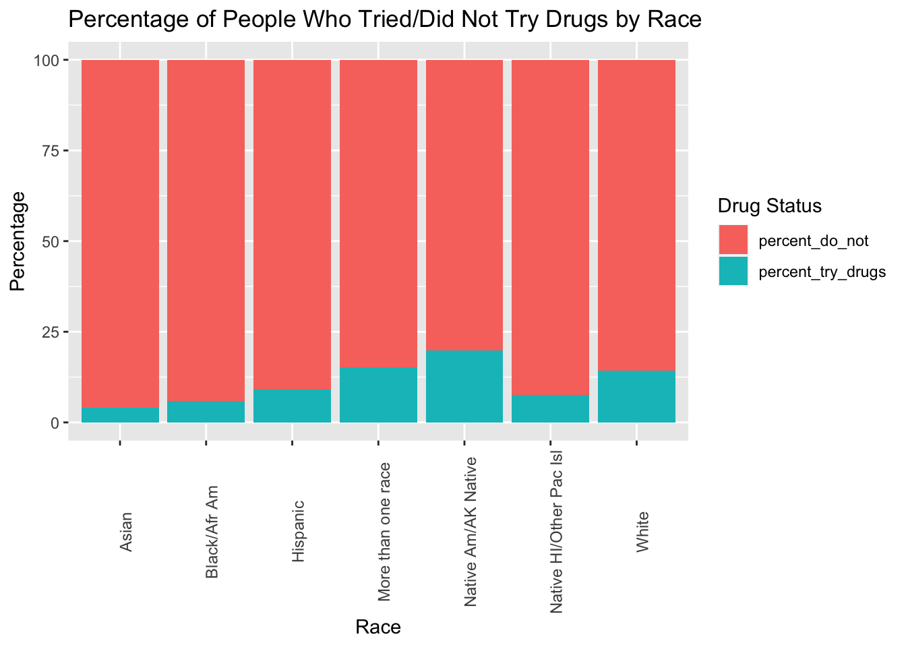

library(tidyverse)
library(broom)
library(usmap)
library(ggplot2)
library(readr)
library(dplyr)
library(ggthemes)
cleaned_data <- readRDS(here::here("dataset/cleaned_data_new.rds"))Analysis
Here we provide a detailed analysis using more sophisticated statistics techniques.
Early Insights
Motivation for Data Analysis (DA)
Our motivation for engaging in Data Analysis of the NSDUH survey comes from our shared interest in finding out how drug use affects all areas of life in society. Understanding more about drug use is important because so much is unknown about drug use and being able to uncover certain relationships may be key in understanding and addressing drug use. For us we are super excited to explore such a huge dataset such as the NSDUH because we can take our time to explore the small key relationships between so many different variables throughout the dataset. Navigating through such a dataset took us a long time to find variables that we needed for analysis but it was perfect in the end because we were able to effectively show key relationships that help the general public understand more about drugs and their use.
Ultimately our goal is to provide key insights into how certain factors play a role in a person’s drug use even if they did a drug for one time. We were initially interested in finding out just about how race and drug use is affecting one another but we then soon realized that we also need to explore the factors for drug use and not just the relationship between the two. We then realized that a more holistic view of each factor into drug use would be more appropriate. These factors of income,and location can play a role in how drug use and race correlate and associate together.
Interested Variables
The variables we were highly interested in exploring is the relationship between drugs used and the race of the respondent in this survey. Being able to see the variables that factor into the relationship is important to understand how a person might be influenced to try and do drugs. The most important variables and factors help determine not only such a relationship of race and drug use but also the disparities between racial groups and drug use.
Going even further, we want to see what factors attribute to drug use in any way, that being income or location. These are important relationships to explore because it could provide insight into why or how someone could be introduced to drug use and what factors play a role. Some specific questions from the survey that play into our analysis are questions asking if a person has ever done such a drug and such a drug could be one of the 6 we are exploring which are cigarettes, marijuana, alcohol, cocaine, crack, heroine. Many factors could influence drug use such that two factors are reliant on each other. For example there could be relationships such that a young person with low income may or may not be more inclined to use drugs. These claims can only be made after such analysis of this dataset and its important to explore them. We aim to answer these questions and relationships below in the analysis.
Also at what age each person has done any of the respective substances and whether they continue to do those drugs or not. Income, age and location are also important factors when it comes to finding the factors as these can be associated with higher drug use or lower as well. We want to explore relationships like if you are younger will you be trying more drugs or will you try more drugs when you are older and how does the racial group aspect play a role. Age can also play along with income and location and it’s important to explore whether these factors intertwine with each other or are they stand alone. We aim to answer these questions and relationships below in the analysis.
Questions for Analysis
The key question we are trying to answer is firstly how does race affect the drug use of a person. Going further, how does location, age, and income factor into this relationship.
Analysis Portion
Necessary Libraries and Datasets
Below we start by first introducing the cleaned dataset and also the libraries that are needed to create plots and tables in a nice and aesthetically pleasing fashion.
Initial Findings and Relationships - EDA
cleaned_data |>
filter(cocage < 120) |>
ggplot(aes(x = cocage)) + geom_bar(show.legend = TRUE) + facet_wrap(vars(NEWRACE2)) +
labs(title = "Age When First Used Cocaine by Race", x = "Age", y = "Frequency")
cleaned_data |>
filter(if_all(c(AL30EST, MR30EST), \(v) v < 85)) |>
arrange(desc(AL30EST)) |>
arrange(desc(MR30EST)) |>
select(AL30EST, MR30EST) |>
count() n
1 5# distinct on 2 columns only shows combinations
cleaned_data |>
filter(AL30EST < 85) |>
select(AL30EST) |>
arrange(desc(AL30EST)) |>
distinct() AL30EST
22304 6
4488 5
1559 4
460 3
3099 2
2247 1cleaned_data |>
filter(MR30EST < 85) |>
select(MR30EST) |>
arrange(desc(MR30EST)) |>
distinct() MR30EST
1238 6
27004 5
3495 4
460 2
9876 1cleaned_data |>
select(NEWRACE2) |>
count(NEWRACE2) NEWRACE2 n
1 Asian 3234
2 Black/Afr Am 6743
3 Hispanic 9929
4 More than one race 2524
5 Native Am/AK Native 587
6 Native HI/Other Pac Isl 226
7 White 34791cleaned_data |>
filter(AL30EST < 85) |>
group_by(NEWRACE2, AL30EST) |>
summarize(AL30EST = mean(AL30EST)) |>
ggplot(aes(x = AL30EST, y = NEWRACE2)) +
geom_line() +
theme_minimal()`summarise()` has grouped output by 'NEWRACE2'. You can override using the
`.groups` argument.
cleaned_data |>
filter(AL30EST < 85) |>
group_by(NEWRACE2, AL30EST) |>
summarize(AL30EST = mean(AL30EST)) |>
ggplot(aes(x = AL30EST)) +
geom_bar(aes(fill = NEWRACE2)) +
scale_fill_colorblind() +
theme_minimal()`summarise()` has grouped output by 'NEWRACE2'. You can override using the
`.groups` argument.
#cleaned_data |>
# filter(AL30EST < 85) |>
# filter(MR30EST < 85) |>
# filter(HR30EST < 85) |>
# select(AL30EST, MR30EST, HR30EST)
# arrange(desc(AL30EST)) |>
# arrange(desc(MR30EST)) |>
# arrange(desc(CC30EST)) |>
# arrange(desc(CR30EST)) |>
# arrange(desc(HR30EST)) |>
# filter(AL30EST == first(AL30EST)) |>
# filter(MR30EST == first(MR30EST)) |>
# filter(CC30EST == first(CC30EST)) |>
# filter(CR30EST == first(CR30EST)) |>
# filter(HR30EST == first(HR30EST)) |>
# select(AL30EST, MR30EST, CC30EST, CR30EST, HR30EST)Alcohol Use Plots
# option 1 for estimated number of days alcohol used in past 30 days by race
cleaned_data |>
filter(AL30EST < 85) |>
group_by(NEWRACE2, AL30EST) |>
summarize(AL30EST = mean(AL30EST)) |>
ggplot(aes(x = AL30EST, y = NEWRACE2)) +
geom_line() +
theme_minimal() +
labs(title = "Estimated Number of Days Alcohol Used in Past 30 Days by Race", x = "Estimated number of days", y = "Race Category")`summarise()` has grouped output by 'NEWRACE2'. You can override using the
`.groups` argument.
# option 2 for estimated number of days alcohol used in past 30 days by race
cleaned_data |>
filter(AL30EST < 85) |>
group_by(NEWRACE2, AL30EST) |>
summarize(AL30EST = mean(AL30EST)) |>
ggplot(aes(x = AL30EST)) +
geom_bar(aes(fill = NEWRACE2)) +
scale_fill_colorblind() +
theme_minimal() +
labs(title = "Estimated Number of Days Alcohol Used in Past 30 Days by Race", x = "AL30EST", y = "")`summarise()` has grouped output by 'NEWRACE2'. You can override using the
`.groups` argument.
# updated the cocaine age plot to make it easier to read
cleaned_data |>
filter(cocage < 120) |>
ggplot(aes(x = cocage)) + geom_bar(show.legend = TRUE) + facet_wrap(vars(NEWRACE2), scales = "free") +
labs(title = "Age When First Used Cocaine by Race", x = "Age", y = "Frequency")
cleaned_data |>
ggplot() +
geom_line(aes(x = NEWRACE2, y = AL30EST, color = "red")) + geom_line(aes(x = NEWRACE2, y = AL30EST, color = "blue"))
If you are directly quoting from a source, please make that clear. You can show quotes using > like this
Plot for Alcohol Use last 12 months by Race
# Filter out records where alcyrtot is greater than 365
filtered_data <- cleaned_data %>%
filter(alcyrtot <= 365)
boxplot_alcohol_use <- ggplot(filtered_data, aes(x = factor(NEWRACE2), y = alcyrtot, fill = factor(NEWRACE2))) +
geom_boxplot() +
labs(title = "TOTAL # OF DAYS USED ALCOHOL IN PAST 12 MOS by RACE (Excluding >365 days)",
x = "Race",
y = "Total Days of Alcohol Use") +
theme_minimal() +
theme(axis.text.x = element_text(angle = 45, hjust = 1))
print(boxplot_alcohol_use)
Plots for Race and Age when First Tried and Drug Used
drug_race_age <- cleaned_data |>
select(NEWRACE2, cigever, cigage, mjever, mjage, alcever, alctry, cocever, cocage, crkever, crkage, herever, herage)
cocaine_data <- drug_race_age |>
filter(cocage < 86)
# Cocaine Plot
ggplot(cocaine_data, aes(x = NEWRACE2, y = cocage, fill = NEWRACE2)) +
geom_boxplot() +
labs(title = "Boxplot of Age of First Drug Use of Cocaine by Race",
x = "Race",
y = "Age of First Use",
fill = "Race Type")
crack_data <- drug_race_age |>
filter(crkage < 86)
ggplot(crack_data, aes(x = NEWRACE2, y = crkage, fill = NEWRACE2)) +
geom_boxplot() +
labs(title = "Boxplot of Age of First Drug Use of Crack by Race",
x = "Race",
y = "Age of First Use",
fill = "Race Type")her_data <- drug_race_age |>
filter(herage < 86)
ggplot(her_data, aes(x = NEWRACE2, y = herage, fill = NEWRACE2)) +
geom_boxplot() +
labs(title = "Boxplot of Age of First Drug Use of Heroine by Race",
x = "Race",
y = "Age of First Use",
fill = "Race Type")Logisitic Regression Models
Important to note that the baselines/intercepts are the Asian Population
Substance Use with Race
drug_use_with_race <- cleaned_data |>
select(NEWRACE2, cigever, cigage, mjever, mjage, alcever, alctry, cocever, cocage, crkever, crkage, herever, herage, income, COUTYP4) |>
mutate(drug_use = ifelse(cigever==1 | mjever==1 | alcever==1 | cocever==1 | crkever==1 | herever==1, 1, 0))
# Model for the Substance Use vs Race
model_sub <- glm(drug_use ~ NEWRACE2, data = drug_use_with_race, family = "binomial")
tidy_output <- tidy(model_sub)|>
mutate(term = ifelse(term == "(Intercept)", "Asian", str_replace(term, "NEWRACE2", "")))
conf_intervals <- confint(model_sub)Waiting for profiling to be done...odds_ratios <- exp(coef(model_sub))
odds_ratios_df <- data.frame(
Odds_Ratio = odds_ratios
)
output_table <- cbind(tidy_output, conf_intervals,odds_ratios_df) |>
rename(Race = term) |>
select(-statistic,-std.error) |>
rownames_to_column(var = "RowNames") |>
select(-RowNames)
output_table Race estimate p.value 2.5 % 97.5 %
1 Asian 0.4230185 5.980073e-32 0.35270632 0.4936763
2 Black/Afr Am 0.2169798 8.887671e-07 0.13037484 0.3034431
3 Hispanic 0.3064576 2.447070e-13 0.22431618 0.3883978
4 More than one race 0.5386455 4.742597e-21 0.42677403 0.6510673
5 Native Am/AK Native 0.9149979 2.235867e-17 0.70679838 1.1300603
6 Native HI/Other Pac Isl 0.2967970 4.240218e-02 0.01391972 0.5880282
7 White 0.9660087 8.507647e-140 0.89063740 1.0410935
Odds_Ratio
1 1.526562
2 1.242319
3 1.358604
4 1.713684
5 2.496770
6 1.345542
7 2.627437Substance Use with Race and Income as a Factor of Each Other
We are gonna assume for the model here that the hypothesis is that there is no association between likelihood of trying drugs ever and race group as well as Income.
drug_use_with_race <- cleaned_data |>
select(NEWRACE2, cigever, cigage, mjever, mjage, alcever, cocever, cocage, crkever, crkage, herever, herage, income, COUTYP4) |>
mutate(drug_use = ifelse(cigever==1 | mjever==1 | alcever==1 | cocever==1 | crkever==1 | herever==1, 1, 0))
# Model for the Substance Use vs Race and Income being Independent
model_sub <- glm(drug_use ~ NEWRACE2 + factor(income), data = drug_use_with_race, family = "binomial")
tidy_output <- tidy(model_sub)|>
mutate(term = ifelse(term == "(Intercept)", "Asian", str_replace(term, "NEWRACE2", "")))
conf_intervals <- confint(model_sub)Waiting for profiling to be done...odds_ratios <- exp(coef(model_sub))
odds_ratios_df <- data.frame(
Odds_Ratio = odds_ratios
)
output_table <- cbind(tidy_output, conf_intervals,odds_ratios_df) |>
rename(Race = term) |>
select(-statistic,-std.error) |>
rownames_to_column(var = "RowNames") |>
select(-RowNames)
output_table Race estimate p.value 2.5 % 97.5 %
1 Asian 0.43220576 2.367549e-24 0.349172293 0.515564083
2 Black/Afr Am 0.18985960 2.310819e-05 0.101865474 0.277712630
3 Hispanic 0.27749672 5.606697e-11 0.194404409 0.360388189
4 More than one race 0.52304960 7.531640e-20 0.410900087 0.635744654
5 Native Am/AK Native 0.89006077 1.949330e-16 0.681210224 1.105732430
6 Native HI/Other Pac Isl 0.27765871 5.783353e-02 -0.005486904 0.569140447
7 White 0.95602397 1.418343e-136 0.880544055 1.031217033
8 factor(income)2 0.06230228 3.513414e-02 0.004294946 0.120217926
9 factor(income)3 0.06663508 5.392007e-02 -0.001080723 0.134440939
10 factor(income)4 -0.04903027 8.246861e-02 -0.104456665 0.006223479
Odds_Ratio
1 1.5406521
2 1.2090798
3 1.3198218
4 1.6871650
5 2.4352776
6 1.3200356
7 2.6013329
8 1.0642840
9 1.0689053
10 0.9521523Substance Use with Race and Income as a Factor of Each Other
Same as before, we are gonna assume for the model here that the hypothesis is that there is no association between likelihood of trying drugs ever and race group as well as Income.
# Model for the Substance Use vs Race and Income
model_sub_income <- glm(drug_use ~ NEWRACE2*factor(income), data = drug_use_with_race, family = "binomial")
tidy_output_income <- tidy(model_sub_income)|>
mutate(term = ifelse(term == "(Intercept)", "Asian", str_replace(term, "NEWRACE2", "")))
conf_intervals_income <- confint(model_sub_income)Waiting for profiling to be done...odds_ratios_income <- exp(coef(model_sub_income))
output_table <- cbind(tidy_output_income,conf_intervals_income, odds_ratios_income) |>
select(-statistic,-std.error) |>
rownames_to_column(var = "RowNames") |>
select(-RowNames)
output_table term estimate p.value 2.5 %
1 Asian 0.37292635 1.345596e-04 0.18246349
2 Black/Afr Am 0.11186896 2.949858e-01 -0.09851296
3 Hispanic 0.23248191 3.089959e-02 0.02039498
4 More than one race 0.86302950 1.378528e-09 0.58512391
5 Native Am/AK Native 1.18663973 7.783582e-09 0.79323211
6 Native HI/Other Pac Isl 0.19346912 5.049058e-01 -0.36635675
7 White 1.15666263 5.192674e-28 0.94904963
8 factor(income)2 -0.12203449 3.391732e-01 -0.37281039
9 factor(income)3 -0.10957638 4.482291e-01 -0.39289818
10 factor(income)4 0.15183678 1.633865e-01 -0.06262576
11 Black/Afr Am:factor(income)2 0.25384628 7.407449e-02 -0.02440743
12 Hispanic:factor(income)2 0.13387908 3.383557e-01 -0.13992600
13 More than one race:factor(income)2 0.13512413 4.727231e-01 -0.23406687
14 Native Am/AK Native:factor(income)2 -0.14064382 6.244183e-01 -0.70507021
15 Native HI/Other Pac Isl:factor(income)2 0.29323796 4.608850e-01 -0.48827059
16 White:factor(income)2 0.18257528 1.822914e-01 -0.08546121
17 Black/Afr Am:factor(income)3 0.44067407 8.601613e-03 0.11210005
18 Hispanic:factor(income)3 0.26560468 9.973084e-02 -0.05067364
19 More than one race:factor(income)3 -0.20161411 3.497527e-01 -0.62392684
20 Native Am/AK Native:factor(income)3 -0.04599576 9.030409e-01 -0.77094091
21 Native HI/Other Pac Isl:factor(income)3 0.35411112 5.003475e-01 -0.65789666
22 White:factor(income)3 0.04318896 7.787989e-01 -0.25830533
23 Black/Afr Am:factor(income)4 0.19147894 1.423409e-01 -0.06368124
24 Hispanic:factor(income)4 0.22970150 6.810967e-02 -0.01651802
25 More than one race:factor(income)4 -0.72698083 1.050365e-05 -1.05142606
26 Native Am/AK Native:factor(income)4 -0.67531093 2.101417e-02 -1.24918091
27 Native HI/Other Pac Isl:factor(income)4 0.07809916 8.399788e-01 -0.68247052
28 White:factor(income)4 -0.43754970 1.938581e-04 -0.66710176
97.5 % odds_ratios_income
1 0.56564679 1.4519774
2 0.32045564 1.1183663
3 0.44284905 1.2617276
4 1.14389622 2.3703307
5 1.60082466 3.2760543
6 0.77668294 1.2134519
7 1.36251967 3.1793050
8 0.12786845 0.8851178
9 0.17374929 0.8962137
10 0.36463323 1.1639702
11 0.53282959 1.2889736
12 0.40835795 1.1432546
13 0.50381314 1.1446789
14 0.42305829 0.8687987
15 1.07524996 1.3407618
16 0.45129630 1.2003045
17 0.76971771 1.5537542
18 0.58198987 1.3042194
19 0.22157742 0.8174103
20 0.71645675 0.9550460
21 1.41902297 1.4249135
22 0.34464194 1.0441352
23 0.44805755 1.2110393
24 0.47720430 1.2582244
25 -0.40449272 0.4833662
26 -0.09960831 0.5089981
27 0.83845622 1.0812299
28 -0.20670462 0.6456164Substance Use with Race and Location
# Model for the Substance Use vs Race and Location Independent
model_sub_loc <- glm(drug_use ~ NEWRACE2+factor(COUTYP4), data = drug_use_with_race, family = "binomial")
tidy_output_loc <- tidy(model_sub_loc)|>
mutate(term = ifelse(term == "(Intercept)", "Asian", str_replace(term, "NEWRACE2", "")))
conf_intervals_loc <- confint(model_sub_loc)Waiting for profiling to be done...odds_ratios_loc <- exp(coef(model_sub_loc))
output_table <- cbind(tidy_output_loc,conf_intervals_loc, odds_ratios_loc) |>
select(-statistic,-std.error) |>
rownames_to_column(var = "RowNames") |>
select(-RowNames)
output_table term estimate p.value 2.5 % 97.5 %
1 Asian 0.45062602 6.304180e-35 0.37915407 0.52243937
2 Black/Afr Am 0.23393351 1.284662e-07 0.14703895 0.32069011
3 Hispanic 0.31732536 3.765679e-14 0.23504868 0.39940310
4 More than one race 0.56638740 6.968352e-23 0.45393187 0.67939271
5 Native Am/AK Native 0.97496895 3.096033e-19 0.76503806 1.19166536
6 Native HI/Other Pac Isl 0.33353408 2.277358e-02 0.05020109 0.62520075
7 White 0.99852745 9.207438e-145 0.92199753 1.07478905
8 factor(COUTYP4)2 -0.08207244 1.529114e-04 -0.12455399 -0.03958344
9 factor(COUTYP4)3 -0.12164089 1.532389e-05 -0.17669046 -0.06641247
odds_ratios_loc
1 1.5692943
2 1.2635605
3 1.3734494
4 1.7618905
5 2.6510849
6 1.3958926
7 2.7142820
8 0.9212052
9 0.8854663Substance Use with Race and Location as a Factor of Each Other
# Model for the Substance Use vs Race and Location
model_sub_loc <- glm(drug_use ~ NEWRACE2*factor(COUTYP4), data = drug_use_with_race, family = "binomial")
tidy_output_loc <- tidy(model_sub_loc)|>
mutate(term = ifelse(term == "(Intercept)", "Asian", str_replace(term, "NEWRACE2", "")))
conf_intervals_loc <- confint(model_sub_loc)Waiting for profiling to be done...odds_ratios_loc <- exp(coef(model_sub_loc))
output_table <- cbind(tidy_output_loc,conf_intervals_loc, odds_ratios_loc) |>
select(-statistic,-std.error) |>
rownames_to_column(var = "RowNames") |>
select(-RowNames)
output_table term estimate p.value
1 Asian 0.36543732 2.550892e-17
2 Black/Afr Am 0.34041651 1.216648e-09
3 Hispanic 0.35244104 7.419889e-12
4 More than one race 0.49414738 7.066146e-10
5 Native Am/AK Native 0.56409864 1.030904e-02
6 Native HI/Other Pac Isl 0.28688786 2.518990e-01
7 White 1.15261850 1.692499e-123
8 factor(COUTYP4)2 0.18568679 2.406502e-02
9 factor(COUTYP4)3 0.18844779 3.021688e-01
10 Black/Afr Am:factor(COUTYP4)2 -0.26268043 8.539462e-03
11 Hispanic:factor(COUTYP4)2 -0.14979336 1.144613e-01
12 More than one race:factor(COUTYP4)2 -0.03597057 7.778876e-01
13 Native Am/AK Native:factor(COUTYP4)2 0.35986711 2.260673e-01
14 Native HI/Other Pac Isl:factor(COUTYP4)2 -0.27090552 4.115780e-01
15 White:factor(COUTYP4)2 -0.38603671 1.102135e-05
16 Black/Afr Am:factor(COUTYP4)3 -0.47413037 1.667979e-02
17 Hispanic:factor(COUTYP4)3 -0.18671829 3.433741e-01
18 More than one race:factor(COUTYP4)3 0.05667737 8.001668e-01
19 Native Am/AK Native:factor(COUTYP4)3 0.30279679 3.422049e-01
20 Native HI/Other Pac Isl:factor(COUTYP4)3 0.37224966 4.189567e-01
21 White:factor(COUTYP4)3 -0.39647123 3.325521e-02
2.5 % 97.5 % odds_ratios_loc
1 0.28103294 0.45027367 1.4411441
2 0.23061867 0.45018243 1.4055329
3 0.25147900 0.45320159 1.4225358
4 0.33778053 0.65207321 1.6391001
5 0.14398410 1.00918479 1.7578626
6 -0.19423636 0.79199300 1.3322748
7 1.05690195 1.24808807 3.1664735
8 0.02488828 0.34759467 1.2040451
9 -0.16520382 0.55241117 1.2073740
10 -0.45880538 -0.06723384 0.7689876
11 -0.33619741 0.03585345 0.8608859
12 -0.28606451 0.21388812 0.9646687
13 -0.22556226 0.94276131 1.4331389
14 -0.92335184 0.37314925 0.7626886
15 -0.55867326 -0.21438584 0.6797456
16 -0.86735716 -0.08955710 0.6224261
17 -0.57795498 0.19589207 0.8296774
18 -0.38530990 0.49348803 1.0583143
19 -0.32879305 0.92276375 1.3536394
20 -0.51635806 1.29866490 1.4509952
21 -0.76721944 -0.03563780 0.6726896Testing the plot of location with substance use
metro_test <- cleaned_data |>
filter(CIG30AV < 94) |>
ggplot(aes(x = CIG30AVG)) + geom_bar(aes(fill = NEWRACE2)) + facet_wrap(vars(COUTYP4))Conclusions
Note on Attribution
In general, you should try to provide links to relevant resources, especially those that helped you. You don’t have to link to every StackOverflow post you used but if there are explainers on aspects of the data or specific models that you found helpful, try to link to those. Also, try to link to other sources that might support (or refute) your analysis. These can just be regular hyperlinks. You don’t need a formal citation.
If you are directly quoting from a source, please make that clear. You can show quotes using > like this
Limitations of Analysis
In our analysis of the data, there were a few limitations that we had to keep in mind. The first is that both when conducting and reading the analysis, remember that the results on substance use are based on respondent’s memories so that introduces error because people may have falsely reported their true substance use. Another source of error that we had to address was that the results of our plots were pretty skewed because the number of white respondents was much higher than the number of respondents of other race categories. This was falsely making it look like substance use was much higher for the white race category than it was for others. To address this, we tried using proportions instead.
Rubric: On this page
You will
- Introduce what motivates your Data Analysis (DA)
- Which variables and relationships are you most interested in?
- What questions are you interested in answering?
- Provide context for the rest of the page. This will include figures/tables that illustrate aspects of the data of your question.
- Modeling and Inference
- The page will include some kind of formal statistical model. This could be a linear regression, logistic regression, or another modeling framework.
- Explain the techniques you used for validating your results.
- Describe the results of your modelling and make sure to give a sense of the uncertainty in your estimates and conclusions.
- Explain the flaws and limitations of your analysis
- Are there some assumptions that you needed to make that might not hold? Is there other data that would help to answer your questions?
- Clarity Figures
- Are your figures/tables/results easy to read, informative, without problems like overplotting, hard-to-read labels, etc?
- Each figure should provide a key insight. Too many figures or other data summaries can detract from this. (While not a hard limit, around 5 total figures is probably a good target.)
- Default
lmoutput and plots are typically not acceptable.
- Clarity of Explanations
- How well do you explain each figure/result?
- Do you provide interpretations that suggest further analysis or explanations for observed phenomenon?
- Organization and cleanliness.
- Make sure to remove excessive warnings, use clean easy-to-read code, organize with sections or multiple pages, use bullets, etc.
- This page should be self-contained.